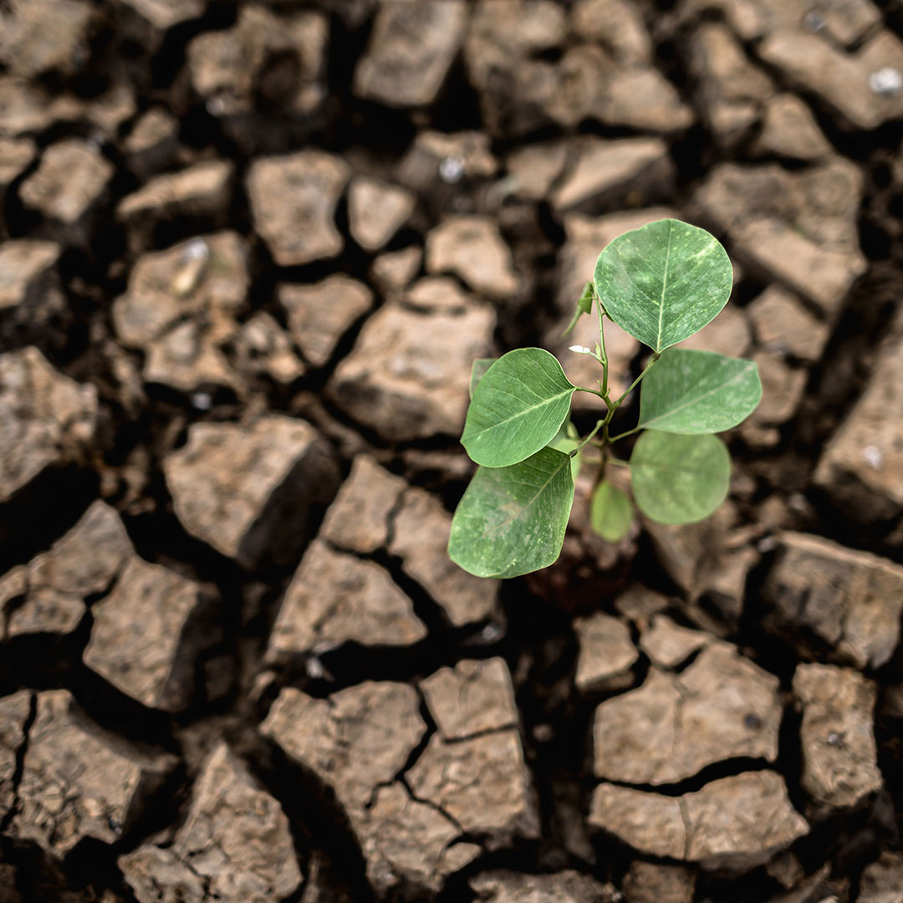
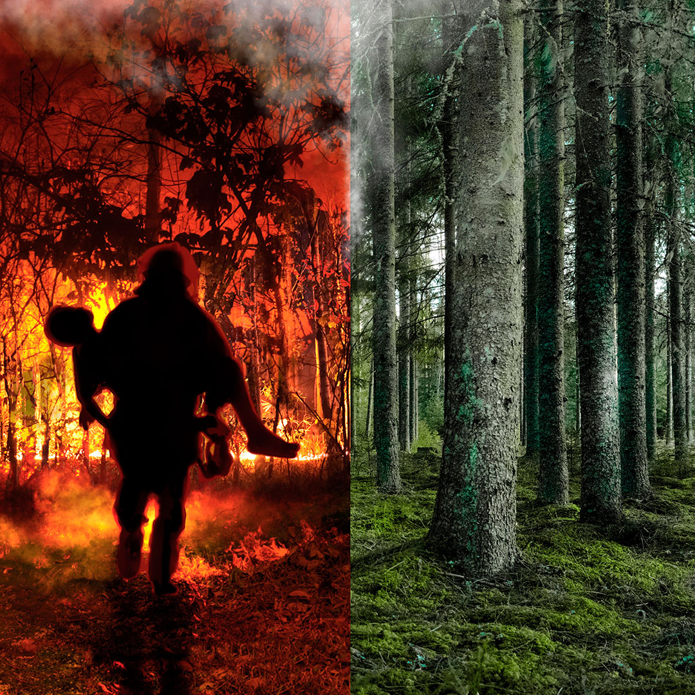
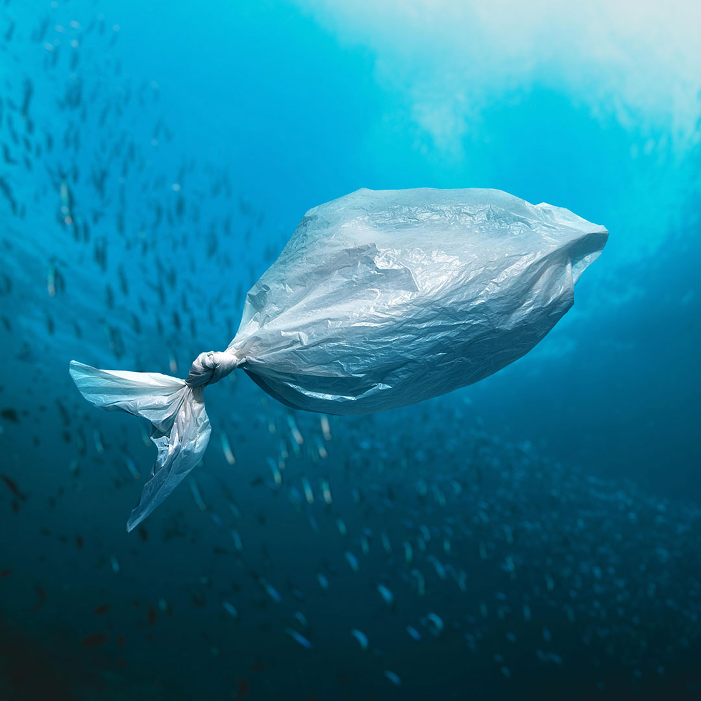
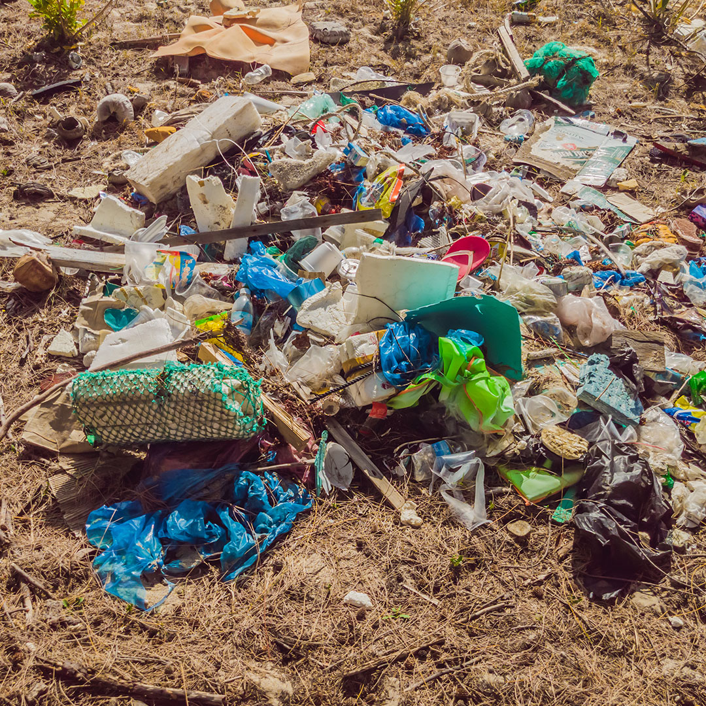

Temperaturas Más Elevadas
En casi todas las zonas terrestres se ven más días calurosos y olas de calor; el año 2020
fue uno de los más calurosos registrados. Las temperaturas más elevadas aumentan las enfermedades
relacionadas con el calor y pueden dificultar el trabajo y los desplazamientos. Los incendios
forestales se producen con mayor facilidad y se propagan más rápidamente cuando las temperaturas son más altas.

Aumento De La Sequía
El agua escasea en cada vez más regiones. Las sequías pueden provocar tormentas de arena y
polvo destructivas que pueden desplazar miles de millones de toneladas de arena por los continentes.
Los desiertos se están expandiendo, reduciendo la tierra para el cultivo de alimentos. Actualmente,
muchas personas se enfrentan a la amenaza de no disponer de suficiente agua de forma regular.

Pérdida De Especies
El cambio climático supone un riesgo para la supervivencia de las especies en la tierra y
en el mar. Estos riesgos aumentan a medida que suben las temperaturas. Los incendios forestales,
las condiciones meteorológicas extremas y las plagas y enfermedades invasoras son algunas de
las muchas amenazas relacionadas con el cambio climático. Algunas especies podrán mudarse y
sobrevivir, pero otras no.

Más Tormentas Intensas
Los cambios de temperatura provocan cambios en las precipitaciones. Esto da lugar a
tormentas más intensas y frecuentes. Provocan inundaciones y corrimientos de tierra,
destruyendo hogares y comunidades, y costando miles de millones de dólares.
Un Océano Que Se Calienta Y Sube De Nivel
El océano absorbe la mayor parte del calor del calentamiento global. Esto derrite las capas
de hielo y eleva el nivel del mar, amenazando a las comunidades costeras e insulares.
El océano también absorbe el dióxido de carbono, manteniéndolo fuera de la atmósfera. Un
mayor nivel de dióxido de carbono hace que el mar sea más ácido, lo que pone en peligro la vida marina.

Escasez De Alimentos
Los cambios en el clima y el aumento de los fenómenos meteorológicos extremos son
algunas de las razones que explican el aumento mundial del hambre y la malnutrición.
La pesca, los cultivos y el ganado pueden desaparecer o ser menos productivos. El estrés térmico
puede reducir la disponibilidad del agua y de los pastizales.

Más Riesgos Para La salud
Los cambios en los patrones climáticos están propagando enfermedades como la malaria. Los
fenómenos meteorológicos extremos aumentan las enfermedades y las muertes, y dificultan
que los sistemas de atención sanitaria puedan mantener el ritmo. Otros riesgos para la salud
son el aumento del hambre y la malnutrición en lugares donde la gente no puede cultivar o
encontrar suficientes alimentos.